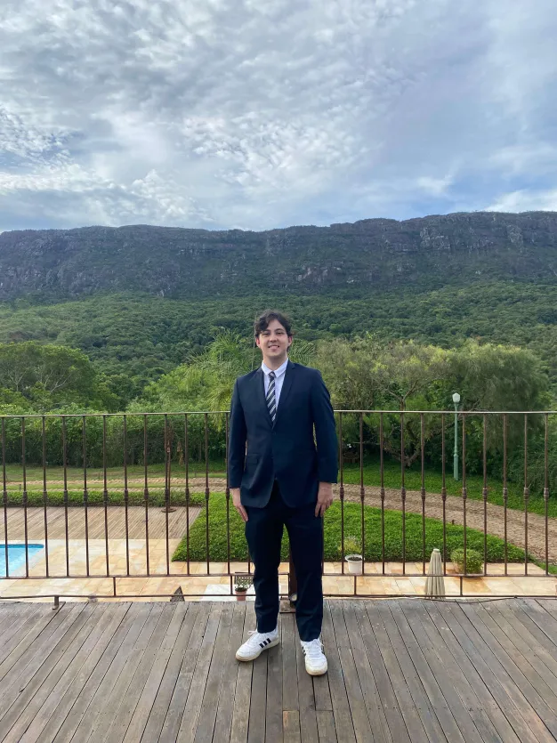
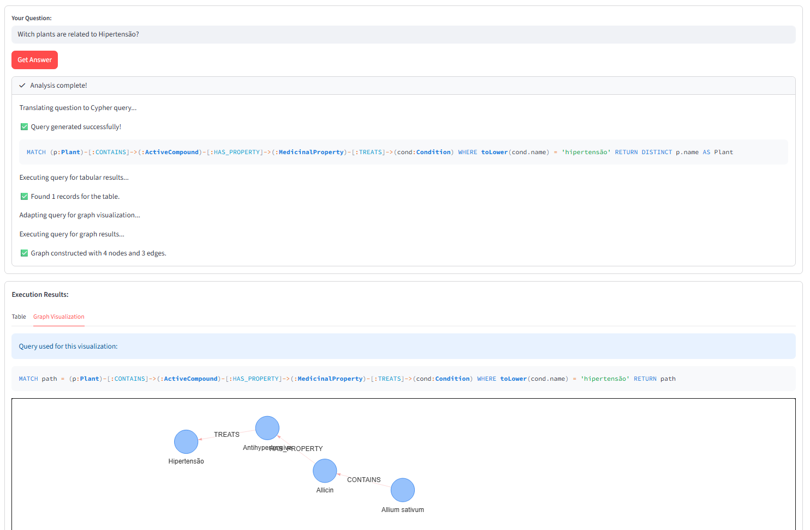

Sou estudante de Engenharia de Software, atualmente no último semestre da graduação, com grande interesse em atuar na área de Tecnologia da Informação, especialmente em desenvolvimento de software ou suporte técnico. Tenho buscado constantemente aplicar na prática os conhecimentos adquiridos ao longo da faculdade, aprimorando minhas habilidades técnicas e minha capacidade de resolver problemas de forma eficiente. Nasci em Bambuí, Minas Gerais, e me mudei para Belo Horizonte para cursar a faculdade, uma decisão que marcou um importante passo na minha trajetória pessoal e profissional. Essa experiência contribuiu para o desenvolvimento da minha autonomia, adaptação e determinação em alcançar meus objetivos. Sou motivado por desafios e pela oportunidade de aprender continuamente. Busco uma oportunidade na área de TI onde eu possa crescer profissionalmente, colaborar com a equipe e contribuir com soluções tecnológicas eficientes e inovadoras. Após a conclusão da faculdade, também pretendo realizar um intercâmbio internacional com o objetivo de desenvolver meu inglês e ampliar minha visão profissional e cultural.
I am a Software Engineering student currently in the final semester of my degree, with a strong interest in working in the Information Technology field, especially in software development or technical support. I have been consistently seeking to apply in practice the knowledge acquired throughout my academic journey, improving my technical skills and my ability to solve problems efficiently. I was born in Bambuí, Minas Gerais, and moved to Belo Horizonte to attend university, a decision that marked an important step in my personal and professional journey. This experience helped me develop autonomy, adaptability, and determination to achieve my goals. I am motivated by challenges and by the opportunity to continuously learn. I am looking for an opportunity in the IT field where I can grow professionally, collaborate with a team, and contribute with efficient and innovative technological solutions. After completing my degree, I also plan to pursue an international exchange program to further develop my English skills and broaden my professional and cultural perspective.
Este projeto apresenta a implementação, em Python, do algoritmo MaxMin Select, que encontra simultaneamente o menor e o maior valor de uma lista de números, aplicando a técnica de divisão e conquista.
Tecnologias: Python
Ver no GitHubEste projeto apresenta uma implementação em Python do algoritmo de multiplicação rápida de Karatsuba.
Tecnologias: Python
Ver no GitHubFerramenta de software que traduz perguntas em linguagem natural para consultas Cypher em bancos de grafos.
Tecnologias: Python
Ver no GitHub
Projeto que investiga o uso de LLMs na geração automática de testes unitários.
Tecnologias: Python
Ver no GitHubCargo: Suporte técnico
Período: 2021 - 2022
Manutenção de impressoras, computadores e rede.
Cargo: Suporte técnico
Período: 2025 - Atual
Suporte técnico online, auxílio em rede, sistema da empresa e banco de dados.